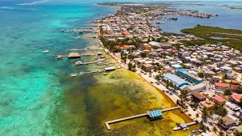
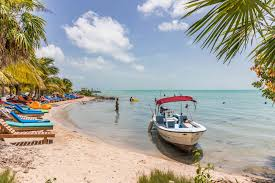
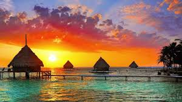

Welcome to my favorite places page! If you were looking for favorite things, you can find that here
My top 2 favorite places, in order are:
Growing up, my parents had a beautiful summer cabin located on the Yakima river, in a golf resort called Sun Country. We spent every summer there, and I loved it! It's where I learned a lot about life. Unfortunately, I don't have any pictures. My parents ended up selling after they moved to California.
I've only been to Belize once, but I am fascinated by well everything about it really. The culture, history, ruins, etc. I would love to return. In fact, I am planning a trip for winter of 2021! Here are a few pictures.
  